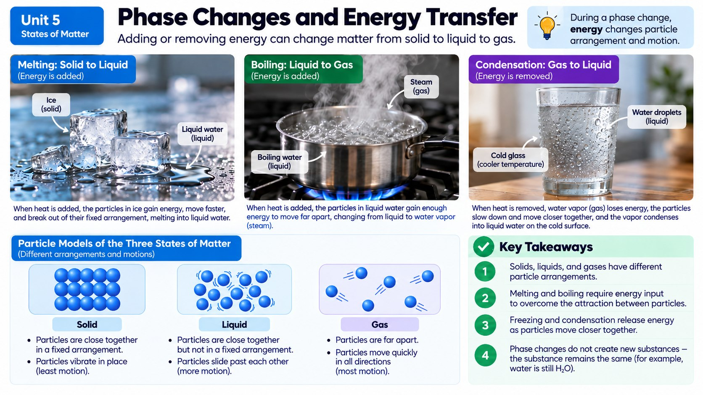

You pull an ice pop from the freezer and set it on a plate. Ten minutes later, it's a sticky puddle. Where did all that thermal energy come from, and why does the temperature of the melting ice pop stay put at 0°C the whole time it's melting?

Melting, Freezing, and Everything In Between
A phase change (also called a change of state) happens when a substance transforms between solid, liquid, and gas because thermal energy has been added or removed. You already know the names for these transitions from everyday life: ice melts into water, water freezes into ice, water boils away into steam, and steam condenses back into liquid water on a cold mirror after a shower. Every single one of these changes is really a story about energy moving into or out of a substance's particles.
When you add energy to a solid like ice, its particles vibrate harder and harder until they finally have enough energy to break free of their fixed positions — that's melting. Add even more energy to the resulting liquid, and eventually particles gain enough energy to escape each other's attraction entirely and become a gas — that's boiling or evaporating. Removing energy runs the whole process backward: gas particles slow down and pull together into a liquid (condensation), and liquid particles slow down further until they lock into a solid (freezing).
The Melting Ice Cube Mystery
Here's something that surprises a lot of people: while an ice cube is actively melting, its temperature stays at exactly 0°C the entire time — it doesn't gradually warm up as it turns to liquid. So where is all that added thermal energy going if not into raising the temperature? It's going into breaking apart the rigid structure that holds the solid's particles in fixed positions, freeing them to slide around as a liquid. Only after ALL of the ice has completely melted does additional added energy start raising the temperature of the now-liquid water above 0°C. The same thing happens in reverse when water freezes, and again when water boils at 100°C — the temperature holds steady during the whole transition while energy reorganizes the particles' arrangement.
This matters for something you might have investigated in class: comparing how different masses of ice melt in the same amount of water. A large ice cube takes longer to fully melt than a small ice chip in the same warm water, because it takes more total thermal energy to melt more matter — even though both pieces of ice are made of identical particles at the identical starting temperature.
Different Materials, Different Rates
Not all materials heat up or cool down at the same rate, even when they receive or lose the exact same amount of thermal energy. If you leave a metal spoon and a wooden spoon of equal mass in the same pot of hot soup, the metal spoon heats up much faster. This is partly about how well each material conducts heat, but it's also about a property scientists can measure precisely: how much energy it takes to change a certain mass of a material by a certain number of degrees. That's why a sandy beach can feel scorching hot under your feet at noon while the ocean water just a few steps away stays comfortably cool — sand and water absorb and release thermal energy at very different rates for the same amount of sunlight energy.
Engineering With Phase Changes in Mind
Understanding phase changes and energy transfer is exactly what lets engineers design better coolers, solar cookers, and insulated packaging. A cooler packed with ice works because the ice absorbs huge amounts of thermal energy from its surroundings while melting — energy that would otherwise be warming your drinks — all while its own temperature holds steady at 0°C, acting like a temperature-stabilizing sponge for heat. Some high-tech cooling packs use special materials engineered to melt at just the right temperature to soak up extra thermal energy exactly when it's needed most.
When engineers test and redesign these devices, they're constantly applying everything from this unit: choosing insulating materials to slow heat transfer, understanding that mass and material type affect how fast something heats or cools, and using the steady temperature of a phase change to their advantage. The next time you see condensation dripping down a cold glass of lemonade on a summer day — water vapor from the air losing energy and condensing back into liquid on the cold surface — you're watching phase-change physics happen right in front of you.
Farmers actually use this same science to protect fruit crops from unexpected overnight freezes. When a hard frost threatens blossoming orchards in early spring, growers sometimes spray their trees with a fine mist of water right before temperatures drop. As that water freezes onto the branches and blossoms, it releases a burst of thermal energy into its surroundings — the exact same amount of energy a phase change absorbs while melting, just running in the opposite direction — and that released warmth is often enough to keep the delicate blossoms slightly warmer than the surrounding air, protecting the crop underneath its icy coating.
Sublimation: Skipping the Liquid Step Entirely
Melting, freezing, boiling, and condensation aren't the only phase changes possible. Some substances can jump directly from solid to gas without ever passing through a liquid stage in between, a process called sublimation. Dry ice, which is frozen carbon dioxide (CO2), is the classic example: instead of melting into a puddle, it sublimates directly into CO2 gas, which is exactly why it produces that dramatic fog effect without ever leaving a wet mess behind. You've probably also seen a milder version of sublimation happen to ice cubes forgotten in the freezer for weeks — they slowly shrink and develop a frosty, shriveled look even though the freezer never climbs above 0°C, because the solid ice is gradually sublimating directly into water vapor in the dry freezer air.
The reverse process, called deposition, happens when a gas turns directly into a solid without ever becoming a liquid first. Frost forming on a cold car windshield on a winter morning is deposition in action: water vapor in the air loses energy so quickly when it touches the freezing glass that it skips the liquid stage entirely and crystallizes straight into solid ice. Food scientists also use sublimation on purpose in a process called freeze-drying, where already-frozen food is placed in a low-pressure chamber so the ice inside sublimates directly away, removing water without ever passing it through a damaging liquid stage — which is exactly how astronaut ice cream and lightweight backpacking meals stay shelf-stable for years.
Heating Curve for Water
Real-World Connections
Sweating to Cool Down
When sweat evaporates off your skin, it absorbs a large amount of thermal energy in the process — exactly why sweating cools your body down on a hot day.
Keeping Vaccines Cold with Dry Ice
Some vaccines have to be shipped using dry ice (frozen carbon dioxide). As it changes directly from a solid to a gas, it absorbs a huge amount of heat from its surroundings, keeping the container extremely cold for days.
Meet the Scientist
Cryogenic Engineers
Cryogenic engineers work with extremely cold materials and design systems — from vaccine shipping containers to astronaut spacesuits to medical freezers — that use phase changes to control temperature precisely across long trips or extreme environments.
Key Vocabulary
Bold, underlined words in the reading above are clickable too — tap one to see its definition pop out. Or click or tap a card below to reveal the definition.
Explore More
Chapter Review
1. While an ice cube is melting on a warm counter, its temperature reading stays at 0°C the whole time. Where is the added thermal energy going?
2. A large ice cube and a small ice chip, both starting at 0°C, are placed in identical cups of warm water. What would you expect to observe?
3. On a hot sunny day, beach sand becomes scorching hot to walk on while nearby ocean water stays comfortably cool. What best explains this?
4. Which phase change occurs when water vapor in warm air touches a cold glass of lemonade and turns into liquid droplets on the outside of the glass?
5. Why do some cooling packs use special materials engineered to melt at a specific temperature, rather than just staying solid or liquid?
California Science Test (CAST) Practice
A student dropped identical 20-gram ice cubes, all starting at 0 degrees C, into four separate water baths held at different starting temperatures. She recorded how many minutes it took each ice cube to completely melt.
| Water Bath Temp (C) | Time to Fully Melt (min) |
|---|---|
| 10 | 18 |
| 20 | 11 |
| 30 | 7 |
| 40 | 5 |
What relationship does this data best support, and why does it happen?